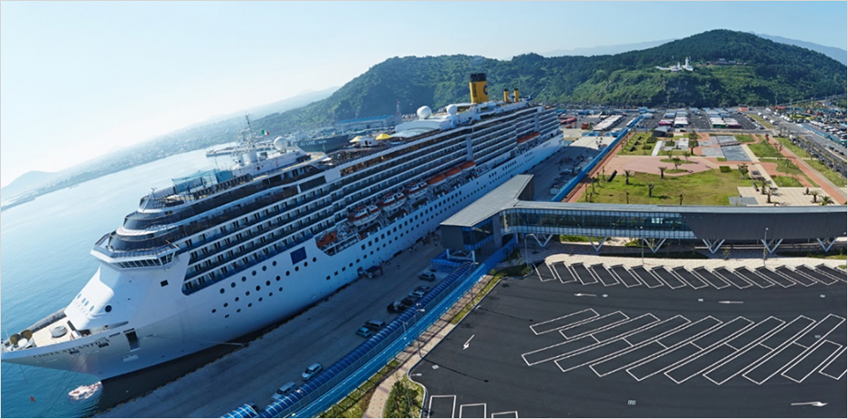

航空・港湾インフラ
- Home
- 投資環境
- インフラ
- 航空・港湾インフラ
Jeju International Airport (IATA: CJU, ICAO: RKPC)

済州国際空港は、14ヵ国54都市と直航路線で結ばれ、年間約3千万人が利用する、韓国で仁川に次いで2番目に多くの航空路線を有する国際空港です。
済州市に位置しており、韓国1位の格安航空会社である済州航空の拠点空港です。イギリス航空交通市場コンサルティング企業のOAGによると、済州空港は全世界で最も忙しい空港としても知られています。
- 年間航空旅客数 2,945万人(2017年基準)
- 年間航空貨物量 266,370トン(2017年基準)
- 14ヵ国54都市への直航路線(2017年基準)

No.1 Global Busiest Domestic Route Jeju(CJU) – Seoul(GMP)
The busiest by some margin is Jeju (CJU) – Seoul (GMP) with 17 million annual seats, equivalent to around 48,000 on average each day.
Jeju is a popular holiday destination for Koreans and although the flight from Seoul is relatively short, at 243nm (451km), as an island there are fewer other transport options for reaching it.
‘Busiest Routes 2020’ OAG(UK)
港湾施設
済州には生産された農林漁業商品など多様な貨物の輸出と物資の輸入のための貨物船の接岸施設、国内線フェリー及び国際線クルーズの接岸施設を備えた7つの港湾と7つのマリーナ施設があります。
済州市と西帰浦市に計2つの貿易港、済州島全体に4つの沿岸港、済州の付属島である楸子島に1つの沿岸港が運営されています。

2つの貿易港 [済州港、西帰浦港]と5つの沿岸港[翰林港、涯月港、城山浦港、和順港、楸子港]

-
同時接岸能力 64バース
1 千トン以上 50バース / 100 トン以上 14 バース -
最大接岸能力
旅客 80,000 DWT / 貨物 42,000 DWT -
年間取扱貨物量(2019)
20,263 千トン -
国際線クルーズの入港実績(2016)
507 回, 1,209,106 人

-
マリーナ施設
7 港, 94 バース